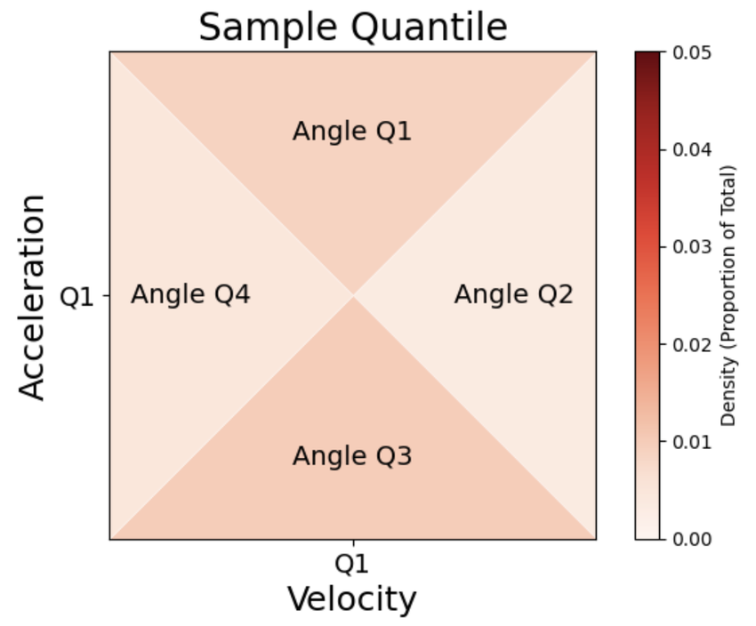
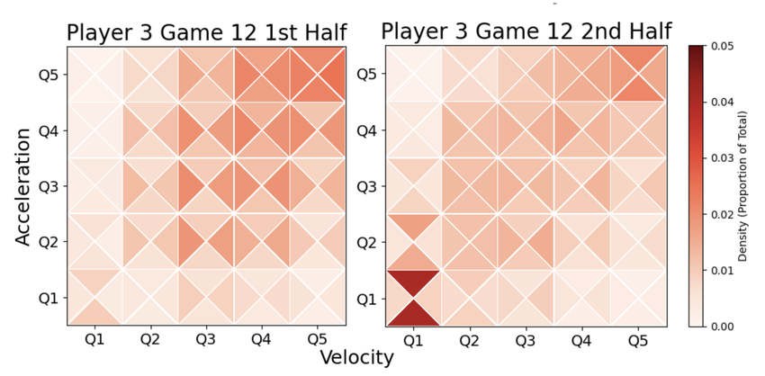
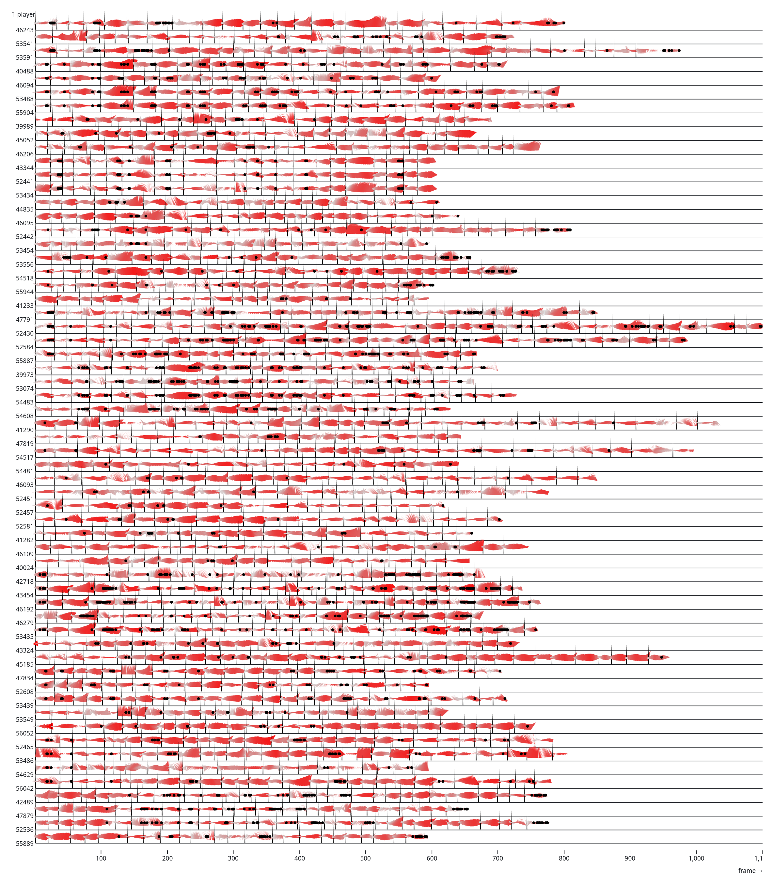

Biomarkers
A report in The Athletic described new saliva-sampling analysis technology that is gaining customers among European soccer teams. Biolyz is a startup company based in Austria that has biosampling and transport methods to rapidly process saliva in order to quantify the athlete-relevant biomarkers using mass spectrometry, a very effective technology for separating and identifying molecules in a biological sample. The collect-send-report process is a step back from the wearable biomarker identification that has been under development for the past 10+ years. It is however a big step forward for commercial metabolomics, a field that 20 years ago focused more on plants than on people.
Metabolism refers to the human body’s energy systems where nutrients, air and water come in so that work, heat and waste can go out. Metabolomics is a deep deep hole to explore. Metabolomic pathways in human biology rely on building blocks like amino acids and proteins, carbohydrates and sugars, lipids and fatty acids, and last, nucleotides and enzymes that are coordinators for gene expression and chemical reactions in the body.
Biolyz references 125 biomarkers that are relevant to athletic performance, a number that scratches the surface of what’s actually going on biochemically. Mass spectrometry, the detection technology used by Biolyz, can identify thousands of metabolites in a biosample, but achieving that precision requires controlled material handling and sample preparation. Biolyz sacrifices precision in favor of easy collection and fast turnaround while still providing adequate depth of information to describe personal attributes that are characteristic of an individual athletes’ metabolism.
Could something like Biolyz work for high stakes professional and college sports leagues in the U.S.? The compact geography of Europe works in favor of Biolyz’ rapid processing. The company’s academic roots also set Biolyz up to translate and commercialize what had been a research project. T
wo paths to create a similar service might work in American sports. Regional sports mass spec labs could spin up in places with large enough athlete and technician populations, helped by investment from deep-pocketed sports team(s) who want the competitive advantage. Alternatively, global mass spec manufacturers like Thermo Rest or Agilent might look to sports as a way to increase their public profile with the attention that partnership with a sports league offers.
For comparison, sample testing on drawn blood in the U.S. takes 7-14 days and returns 50-70 biomarkers. Blood test cost hundreds of dollars despite (or maybe because of) the nationwide network of medical and lab infrastructure that supports blood testing.
The manual collection of saliva is not especially high-tech (even though economical, rapid, refrigerated sample transport has real technical challenges). One more technical approach is to use micro- and nano-scale engineering to rapidly sample, analyze and report for metabolites in some kind of wearable form factor. Commercial and research progress into analysis of interstitial fluids is an example, led by the success of wearable continuous glucose monitor (CGMs) patches. Interstitial fluid exists below the surface of the skin. Micro-size needles can access and gather the fluid without triggering nerve cell responses. Electrodes detect the volume of glucose in the presence of enzymes and a radio transmits the data to a receiver or a phone app.
Jason Heikenfeld, an engineer at the University of Cincinnati, is the inventor of the sweat biomarker detector that eventually became Gatorade’s sweat patch. He thinks that interstitial fluid is capable of more robust biochemical analysis and has founded a company, Kilele Health, to develop the technology. University of Pittsburgh researchers have created tests for interstitial fluid that detect drugs (marijuana, fentanyl) and, in other circumstances, antibodies responding to infections (like COVID). These are specific electro-chemical tests that work like CGMs. Heikenfeld’s new startup plans to develop new classes of bioaffinity sensors based on CRISPR-type enzymes for gene sequence recognition, though it will take work to extend the longevity and stability of these chemical processes in order to incorporate the new technology into a wearable.
What is becoming increasingly apparent is that concurrent biometric, activity and biomarker data add to a sum that is greater its parts. The latest Epicore sweat sensor combines electro-chemical sodium detection with skin temperature sensors and an accelerometer to measure activity-level. Borussia Dortmund uses the Biolyz biomarker panel alongside player-tracking and athlete health-performance data. Whoop, makers of a consumer biometric-sensing band, introduced a biomarker lab service to complement the algorithmic recommendations based on wearables data. Orreco, a rapid blood biomarker service for professional teams based in Ireland, will be integrating its data with motion-tracking data sources from Sportradar and Data Driven Sports Analytics, an Australian computer vision company.
Visualizing Player Tracking Data
Player tracking in sports has evolved, albeit slowly, over the fifteen years that the technology has been around. Early on, the athletes’ time and distance measurements helped to establish “training load” as an catch-all metric that accounts for the work from training and from competition that an athlete experiences. Training load would, in turn, foster a second metric called “Acute-Chronic Workload Ratio” that added (a little) context to athlete work measurement.
Wearable heartrate measurement systems have been around since before player tracking, and it took some time to realize how valuable biometrics are in terms of workload. I remember my first GPS running watch, a Nike-TomTom collaboration, that showed time-distance only. Progress when the data consists of the speed and distance of your runs is knowing that you’ve gone faster or further, so I was always trying to go faster and further. Overuse injuries were common in my experience, like every couple of months.
ACWR was thought to be a way to manage injury risk but that theory did not hold up. Statistical analysis showed that any increase in measured injuries that correlated with a high ACWR was just as likely to be the result of increased exposures to injuries (as in more training, more practices, more games) as it was to be the result of the recent high volume of athletes’ work.
The best current example that links player tracking to injury risk comes from sports statisticians at the University of North Carolina. Kendall Thomas and Jan Hannig presented, Movement Dynamics in Elite Female Soccer Athletes: The Quantile Cube Approach at the last New England Symposium on Statistics in Sports. The “quantile cube” is a data visualization that attempts to capture the complexity of athletes’ movement. The premise is that the wear and tear an athlete experiences increases as athletes move faster and change direction more frequently. Game tracking data is especially useful because the higher stakes (compared to practice or training) should correspond to maximum (or at least higher) exertion.


The paper, the methods and the visual presentation suggest that more exploratory analysis with player tracking data is called for. Thomas and Hannig show player tracking averages for half-games, consistent with their objective to show macro-level trends throughout a season of games. Player tracking data is typically measured at between 10-30 frames per second, meaning that lots of information is lost when half-games are the standard for precision.
The opposite extreme is to display each data point and see the patterns that emerge in high-density data visualization for player tracking data. For example, this is what one weekend of NFL games worth of pass receiver tracking looks like (from 2026 Big Data Bowl data).

One further benefit from exploratory data visualization for player tracking data should be as a stepping stone toward synthetic data for athlete biomechanics. If visual methods can get close to representing athlete movement signatures with something that can be easily inspected, it should make it possible to gain confidence in sythetic data that generates realistic athlete movement patterns. Synthetic data is, I think, important for increasing the volume of data shared throughout sports, something that should improve causal analysis between biomechanics and injuries.
Womens Research Update
US Soccer announced a $30 million grant from Michelle Kang to create the Kang Institute, a global hub for womens athletic research. The institute’s “first study will focus on the needs of players by targeting research around injury prevention, mental health, workload management, menstrual health, and the transition from youth to elite competition,” which seems like a lot, according the NBC News reporting. The anticipated work products will be research and documenting best practices based on the research, along with an education mission.
The initiative has the unprecedented objective of sharing the research work products with competing nations and teams. Lex Chalat, director of Soccer Forward Foundation, told NBC News, “We want to support other countries in developing their best practices and developing and understanding how to raise the bar in their country as well.”
Georgie Brunvels is now the research innovation lead for US Soccer. She is a respected voice in womens’ sports and research, 0 USWNT coach Emma Hayes at Chelsea FC and with Jill Ellis and Dawn Scott on the 2019 USWNT World Cup victory.
The idea to document best practices is something that KI has in common with FAIR. FAIR stands for the Female, woman and/or girl Athlete Injury pRevention group organized by the International Olympic Committee. The FAIR Consensus recommendations got input from 109 authors who participated in an eight-step process. The primary prevention recommendations are shown below.

It is also worth mentioning that the Wu Tsai Human Performance Alliance held its Female Athlete Research Meeting last month at Stanford. According to presenter Emily Kraus, FARM started as a weekly meeting among Stanford’s Wu Tsai group who worked on women’s sports. This was the first time that the Stanford FARM group opened up the conversation to a broader audience. Four hundred attended.
Discussing the research in settings like the FARM meeting is at least as important as doing the research. The enthusiasm and intelligence on display in the researchers’ work was impressive, as were the helpful, insightful questions and thoughts posed by attendees and panelists. Progress is in hand and underway across the collective at FARM and at Wu Tsai.